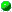

Class Button
Class Button
java.lang.Object
|
+----Button
-
class
Button
-
extends Object
Button is the main class for creating buttons.
-
See Also:
-
ToggleButton,
MEXButton,
MEXButtonList
-
Version:
-
1.0f 25 Aug 1995
-
Author:
-
Georg Heßmann

-
 app
app
-
Static pointer to the main applet.

-
 Button(int, String, int, int, int, int, Font)
Button(int, String, int, int, int, int, Font)
-
Creates a button.

-
 GetNum()
GetNum()
-
Gets the id-number of this button.
-
action()
-
Main scheduling function.
-
 drawAll(Graphics)
drawAll(Graphics)
-
Redraw all buttons.
-
drawButton(Graphics)
-
-
drawChanged(Graphics)
-
Redraw only these buttons, which are changed since the last
redraw.
-
freeAll()
-
Deletes all buttons.
-
mouseDown(int, int)
-
Handels a mouse click.
-
mouseDrag(int, int)
-
Handels a mouse drag event.
-
mouseUp(int, int)
-
Handels a mouse up event.
-
mouseUpButton(int, int)
-

 app
app
public static Dance app
-
Static pointer to the main applet. Has to be set before
the first use of a button.

 Button
Button
public Button(int bnum,
String l,
int x,
int y,
int w,
int h,
Font f)
-
Creates a button.
-
Parameters:
-
bnum
-
id-number for the button
-
l
-
label
-
x
-
x-ccordinate of the button
-
y
-
y-coordinate of the button
-
w
-
the size().width
-
h
-
the size().height
-
f
-
the font used for the label


freeAll
public static void freeAll()
-
Deletes all buttons.
drawAll
public static void drawAll(Graphics g)
-
Redraw all buttons.
drawChanged
public static void drawChanged(Graphics g)
-
Redraw only these buttons, which are changed since the last
redraw.
mouseDown
public static boolean mouseDown(int x,
int y)
-
Handels a mouse click. Normaly called from the applet.
If something has changed, java.applet.Applet.repaint() will be called.
mouseUp
public static boolean mouseUp(int x,
int y)
-
Handels a mouse up event. Normaly called from the applet.
If something has changed java.applet.Applet.repaint() will be called.
If the mouse down and the mouse up event was over the
same button, the action function of this button will be called.
mouseDrag
public static boolean mouseDrag(int x,
int y)
-
Handels a mouse drag event. Normaly called from the applet.
If something has changed java.applet.Applet.repaint() will be called.
 GetNum
GetNum
public int GetNum()
-
Gets the id-number of this button.
-
Returns:
-
id-number of this button.
drawButton
protected void drawButton(Graphics g)
mouseUpButton
protected boolean mouseUpButton(int x,
int y)
action
protected void action()
-
Main scheduling function. Will be called if an button
is correctly pressed (mouse down and up).